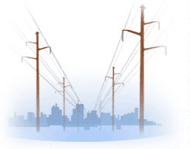
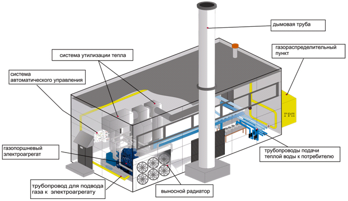
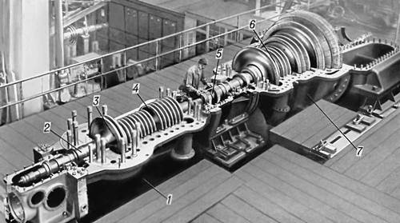
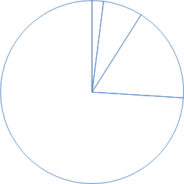
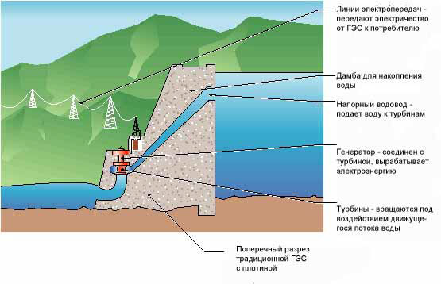
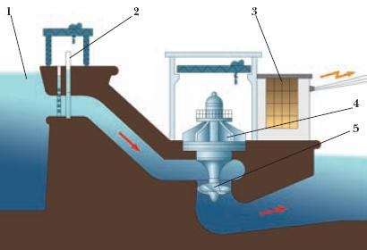

|
|
|
|
Заняття
3.
Тема: ПАЛИВНО-ЕНЕРГЕТИЧНИЙ КОМПЛЕКС.
ЕЛЕКТРОЕНЕРГЕТИКА
Питання
до розгляду:
1. Енергетичний комплекс галузей виробництва.
Структура електроенергетики.
2. Традиційна енергетика. Атомна енергетика.
3. Нетрадиційна енергетика.

ЧИ
ЗНАЄТЕ ВИ ЩО:
* У 2010 році вже 2,7 % електроенергії Іспанії
було одержано з сонячної енергії, в Німеччині - 2
% одержано з фотоелектричних установок. У 2011
році близько 3 % електроенергії Італії було
одержано з фотоелектричних установок. Перша в
Росії сонячна електростанція потужністю 100 кВт
була запущена у вересні 2010 року в Білгородській
області.
* У світовому енергетичному балансі
максимальне вироблення електроенергії доводиться
на теплові електростанції, вони виробляють
67% світової електроенергії, гідроелектростанції -
16%, атомні - 14%, вітряні - 1,1%. Серед
паливних електростанцій переважають вугільні, вони
виробляють 40% всій світовій електроенергії.
*Потік сонячного випромінювання, що
проходить через майданчик в 1 м2, розташований
перпендикулярно потоку випромінювання на вході в
атмосферу Землі, складає 1367 Вт.
Із-за поглинання атмосферою максимальний
потік сонячного випромінювання на рівні моря на
екваторі дорівнює 1020 Вт. Із-за зміни дня і ночі
і зміни кута сонця над горизонтом середньодобове
значення потоку сонячного випромінювання через
одиничний горизонтальний майданчик в три рази
менше. Взимку в помірних широтах це значення в два
рази менше і складає 170 Вт. За допомогою найбільш
ефективних на сьогодні сонячних батарей можна
перетворити цю енергію в електрику з ефективністю
до 32%. Разом за добу з 1 м2 можна одержувати біля
1,3КВт. Що в холодний зимовий місяць складе
близько 39 КВт/час з одного метра квадратного.
* Австралійці встановили новий рекорд КПД
сонячних батарей, який склав 43%.
*Середня німецька сім'я споживає
4400КВт-часов в рік або 366 КВт/ч в місяць. При
ціні за електрику в 17 євроцентів витрати на
електроенергію складають 62 євро в місяць.
*На потреби індустріального виробництва в
різних країнах витрачається: Китай ~75%
виробленої електроенергії, Росія: ~55%, США:
~25%. У перерахунку на душу населення ці
цифри складають: ~336 квт.час в Росії ~257 квт.час
в США ~106 квт.час в Китаї. Що стосується
енергетики в цілому, то споживання тепла, газу,
електрики сектором житлово-комунального
господарства в світі складає всього близько 16%
від загального енергетичного попиту господарства
країн світу. У нього входить споживання енергії на
опалювання і приготування їжі в житлових будинках,
офісах, підприємствах роздрібного обслуговування,
лікарнях і т.д.
*До нетрадиційної енергетики прийнято
відносити наступні її види: малі
гідроелектростанції, вітрова енергетика,
геотермальна енергетика, сонячна енергетика,
біоенергетика, установки на паливних елементах,
воднева енергетика, термоядерна енергетика.
*Атомні електростанції виробляють приблизно
чверть електрики, споживаної в Німеччині. Більше
половини енерговиробництва доводиться на газ і
вугілля. І лише 17 % енергії постачають
поновлювані джерела. У планах Німецького уряду
повністю перейти на поновлювані джерела енергії
вже в 2030 році. Політичну волю країни підстебнула
катастрофа на АЕС Фукусима.
*АЕС Фукусима-1 до аварії 2011 р., мала
шість енергоблоків загальною потужністю 4,7 ГВт,
що робило Фукусиму-1 однієї з 25 найбільших
атомних електростанцій в світі.
*Згідно прогнозам енергетичної корпорації
Ексон-Мобіл, не дивлячись на катастрофу на
японській АЕС Фукусима, найближчими роками
прогнозується значне зростання частки атомної
енергії. Вона залишиться третім найбільш поширеним
джерелом палива для виробництва електроенергії у
світовому масштабі, і її частка ростиме у всіх
основних регіонах. У період до 2030 р. істотно
збільшиться використання енергії вітру; річне
зростання в період з 2005 по 2030 р. складе
близько 12%.
Питання
для співбесіди:
1. Значення електроенергетики в
господарському комплексі.
2. Яки типи електростанцій
експлуатуються в Україні.
3. Принцип роботи теплової
конденсаційної електростанції.
4. Особливості роботи
теплоелектроцентралей.
5. Призначення і особливості
роботи газотурбінних електростанцій.
6. Принципи роботи атомних
електростанцій.
7. Особливості розміщення і
принцип роботи гідроелектричних станцій.
8. Використання нетрадиційних
видів енергії.
9. Передача електроенергії.
Завдання №1
Розглянути діаграми використання палива у
виробництві електричної енергії в Україні та типи
електростанцій.
Підписати сегменти діаграми відповідно кількості
виду палива яке використовуються для виробництва
енергії (Діаграма 1).
Підписати кількісні (процентні) значення які
відповідають типам електростанцій України
(Діаграма 2).

Діаграма
1. Структура виробництва енергії за
видами палива в Україні.

Діаграма
2. Структура електростанцій за видом в
Україні.
Завдання №2
Познайомитись з класифікацією основних типів
електростанцій.
Заповнити форму 13, розшифрувати абревіатури типів
станцій.
| ТЕПЛОВІ
ЕЛЕКТРОСТАНЦІЇ |
ГІДРОЕЛЕКТРОСТАНЦІЇ |
|
Паротурбінні
|
Газотурбінні
|
Атомні |
Греблева
|
Дериваційна |
КЕС
|
ТЕЦ
|
ГТ
|
ПГУ
|
Реактори на
тепловий нейтронах
|
Реактори на
бистрих нейтронах
|
ГЕС
|
ГАЕС
|
|
|
|
|
|
|
|
|
|
Форма
13. Типи електростанцій
Завдання
№3
Скласти технологічну схему роботи теплової
конденсаційної електростанції. Коротко описати
конструкцію і роботу її основних складових частин.
Систематизувати дані про електростанції цього
типу.
Заповнити форми 14 і 15.
Переваги
|
Недоліки
|
ККД
|
Розміщення
|
Приклади
|
|
|
|
|
|
Форма 15.
Характеристика
теплових конденсаційних електростанцій
Завдання
№4
Скласти технологічну схему роботи
теплоелектроцентралі (ТЕЦ). Систематизувати дані
про електростанції цього типу.
Заповнити форми 16 і 17.
Переваги
|
Недоліки
|
ККД
|
Розміщення
|
Приклади
|
|
|
|
|
|
Форма 17.
Характеристика
теплоелектроцентралей
Завдання
№5
Розглянути малюнки 3, 4 і 5.
Виявити складові частини теплових електростанцій
та теплоелектроцентралей, позначити їх на
малюнках, визначити тип електростанцій, які
зображені на малюнках, спільні та відмінні риси
ТЕС та ТЕЦ.

Малюнок
3. Теплова електростанція

Малюнок
4. Енергетичний блок ТЕЦ

Малюнок
5. Парова турбіна
Завдання
№6
Познайомитись з особливостями будови атомних
електростанцій на малюнку 6.
Скласти технологічну схему роботи АЕС.
Систематизувати дані про електростанції цього
типу.
Заповнити форми 18 і 19.

Малюнок
6. Схема атомної електростанції.
Переваги
|
Недоліки
|
ККД
|
Розміщення
|
Приклади
|
|
|
|
|
|
Форма 19.
Характеристика атомних електростанцій.
Завдання
№7
Проаналізувати структуру витрат в ядерному
паливному циклі.
На підставі здійсненого аналізу заповинити даними
та кольором кругову діаграму 3.

Діаграма
3. Структура витрат у виробництві
енергії на основі атомної електростанції.
| 1)
видобування природного урану |
2 %
|
| 2)
переробка та збагачення урану |
7 %
|
| 3)
виготовлення ТВЕЛів (тепловиділяючих
елементів) |
17 %
|
| 4)
переробка і поховання відходів |
74 %
|
Завдання
для самостійної роботи
Завдання
№8
Скласти доповідь на тему „Аварія на Чорнобильській
АЕС” за таким планом :
1) географічне положення АЕС;
2) конструкція АЕС (кількість, типи і потужність
енергоблоків);
3) дата аварії;
4) причини аварії;
5) характер аварії;
6) ліквідація аварії;
7) наслідки аварії;
8) сучасний стан ЧАЕС.
Завдання
№9
За матеріалами малюнку 7 виявити будову
гідроелектростанції (ГЕС). Записати назви і
призначення основних складових частин ГЕС.
Систематизувати дані про ГЕС, заповнити форму 20.

Переваги
|
Недоліки
|
ККД
|
Розміщення
|
Приклади
|
|
|
|
|
|
Форма 20.
Характеристика гідроелектростанцій.
Завдання
№10
Виявити ступінь впливу основних природних і
соціально-економічних ресурсів і факторів на
розміщення електростанцій різного типу.
Заповнити форму 21 наступним чином: в кожну строку
таблиці запишіть: "вирішальний", "суттєвий",
"слабкий", "не впливає" в залежності від ступеня
впливу кожного окремого фактору на географічне
розміщення.
Тип
електростанцій
|
Паливні
ресурси
|
Водні ресурси
|
Транспортний
фактор
|
Райони
споживання
|
КЕС
|
|
|
|
|
ТЕЦ
|
|
|
|
|
ГТ
|
|
|
|
|
АЕС
|
|
|
|
|
ГЕС
|
|
|
|
|
Форма 21.
Фактори впливу на розміщення
електростанцій
ЕКЗАМЕНАЦІЙНІ
ПИТАННЯ
СПИСОК
ДЖЕРЕЛ
1. Куракина А.Ф. Основы промышленного и
сельскохоз. произв-ва .
М., 1981.
2. Плоткин М. Л. Основы промышленного
производства. М., 1977.
3. Хрущев А. Т. География промышленности
СССР. М., 1990.
4. Экономика отраслей народного хозяйства /
Под ред. А. С. Кима. Мн., 1987.
5. Анализ хоз. деятельности в промышлен. (под
редакцие В.И. Стражева). Мн., 1997.
6. Назаренко Н. Г. Экономика сельского хозяйства.
М., 1996.
7. Манулик А. В. Здравоохранение: вопросы теории и
организации управления Учеб.-метод, пособие. Мн.,
1994.
8. Щетинин В. П., Хроменков Н. А. Экономика
образования. М., 1998.
9. Ярошевич В. П., Шкурин М. И. Общий курс
транспорта: Учеб. пособие. Гомель, 1997 |
|
|
|